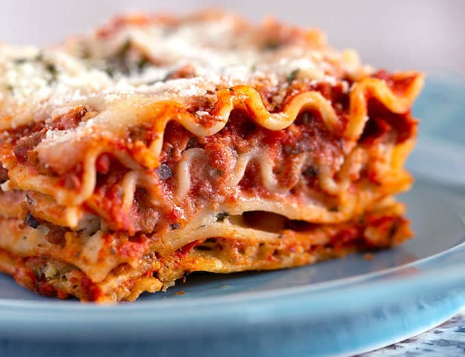

Lasagne-Rezept

BESCHREIBUNG
Wie wird eine LASAGNE gemacht ?
ZUTATEN
- Lasagneblätter
- Safran
- Hagebutten-Marmelade
- 4 Meter Zahnseide
- ungewachst
- gewachst
WICHTIG! Auf jeden Fall unbenutzte Zahnseide verwenden.
ANLEITUNG!
- Alle Zutaten zusammenschmeißen
- Gebührende Zeit in den Ofen
- Genießen